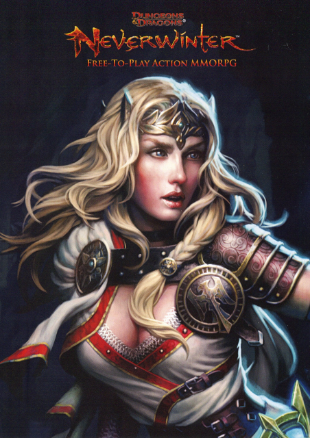

Neverwinter
A free-to-play MMORPG inspired by R.A. Salvatore's Neverwinter Saga book trilogy.

Neverwinter is a free, action MMORPG set in the Forgotten Realms city of Neverwinter, developed by Cryptic Studios. Neverwinter is planned to be a crossmedia event accompanying a tabletop game from Wizards of the Coast and four books by fantasy author R.A. Salvatore.
Story
It's been 100 years since the spellplague left the world of Faerûn in ruins. Neverwinter built near the Sea of Swords is still being rebuilt from the destruction when dark forces gather to take of control the land for themselves. This is a world where death is found for the weak, glory and gold for the brave and bold, and danger for this is the world of Neverwinter.
Gameplay
Neverwinter is an action-MMORPG set in a ever evolving persistent world with thousands of other players. Neverwinter is being built with the same engine as Cryptic's two other MMOs, Champions Online and Star Trek Online.
0 comments
Be the first to leave a comment!